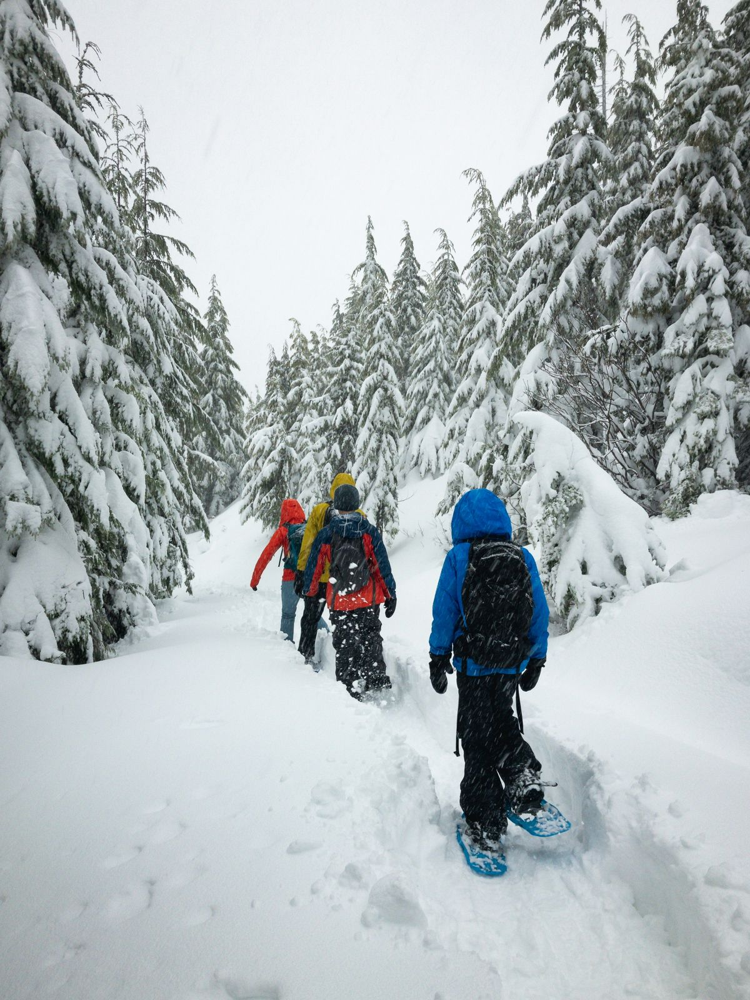
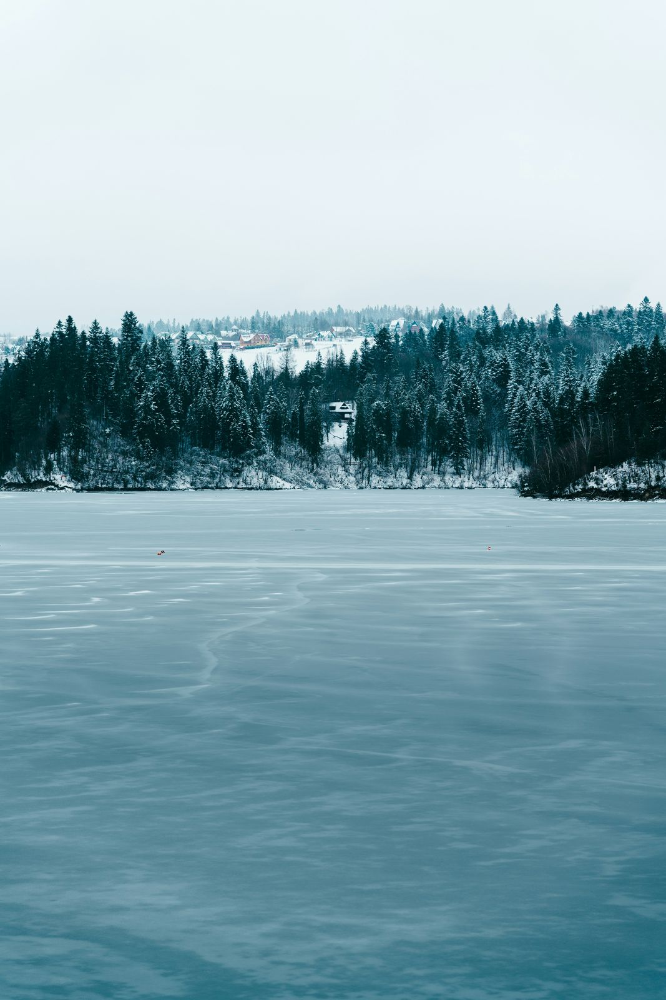

In winter, Nordmarka turns quiet. The forest that begins at the end of Oslo's metro line fills with snow, the lakes freeze, and the trails belong to skiers, foxes and the odd moose track. This is the Oslo that most winter visitors never see — and it's 30 minutes from the city centre.
You meet your guide in central Oslo and ride the metro up the hillside together, watching the city drop away below. From the last stops on the line, you walk straight into the forest. Your guide picks the route on the day — through snowy spruce, past frozen tarns and up to a viewpoint over Oslo and the fjord when the weather allows.
It's an easy, unhurried walk: no skiing skills, no special fitness, just a few hours of winter forest with someone who knows it well.
Highlights
- Snowy spruce forest and frozen lakes, 30 minutes from the city centre
- Views over Oslo and the Oslofjord from Nordmarka when the weather allows
- Snowshoeing — the easiest way to walk in deep snow, no experience needed
- Private guide for your group only, at your pace
- The metro ride up the hillside is part of the experience
Snow, ice or slush?
Snow in Oslo comes and goes. That's why this tour runs in all winter conditions: with snowshoes when there's snow, and with ice spikes and poles when the trails are icy. Your guide decides on the day, and brings the right gear.
If the weather makes the forest unsafe — a storm or heavy rain on ice — we'll tell you the evening before and offer a new date or a full refund.
What's included
- Private guide for your group
- Snowshoes or ice spikes, depending on conditions
- Hiking poles
What to bring
- Warm, waterproof winter boots (essential — snowshoes and spikes fit over your own boots)
- Warm layers, a windproof jacket, hat and gloves
- Your own snack and something warm to drink, if you like
- A metro ticket — a standard Ruter ticket for zone 1; we'll show you how to buy it in the app
Good to know
- Starts around 10:00 to make the most of the daylight
- About 4 hours in total, including roughly 30 minutes on the metro each way
- Easy walking — no skiing and no previous experience needed
- Older children are welcome; contact us about younger ones
- We send the exact meeting point in your confirmation



Frequently asked questions
Do I need experience with snowshoes?
No. Snowshoeing is simply walking with wider feet — your guide shows you how in a couple of minutes, and the routes are chosen for beginners.
What if there is no snow?
Then we hike with ice spikes and poles instead. Oslo's forest is beautiful in frost and ice too, and the tour runs either way. If conditions are unsafe, we offer a new date or a full refund.
How do we get to the forest?
By metro. You meet your guide in central Oslo and ride the metro together up to Nordmarka — about 30 minutes each way. You'll need a standard Ruter ticket for zone 1, which we'll help you buy in the app.
Is food included?
No. Bring your own snack and a warm drink if you'd like one along the way.
What should I wear?
Warm, waterproof winter boots are the most important thing — the snowshoes and spikes go over your own boots. Add warm layers, a windproof jacket, a hat and gloves. We send a full list with your confirmation.
When does the season run?
From December to March, depending on conditions. Book by enquiry and we'll confirm your date within 24 hours.